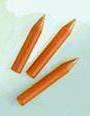
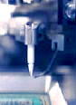
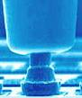
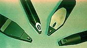
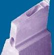

Wirebonding
Tools
Wirebonding equipment use
bonding tools known as
capillaries for
thermosonic ball bonding.
Capillaries hold
and control the bonding wire as well as form bonds from it during the ball
bonding process.
Capillaries are
ceramic
axial-symmetric tools
with vertical feedholes (holes where the bonding wires are fed) through
its center.


Fig. 1.
Photo of uninstalled capillaries (left)
and an
installed capillary (right)
The
proper choice
of capillary depends on many factors: bond pad size, bond pad pitch, wire
diameter and hardness, bond pad metallization, bonder speed and accuracy,
loop height, loop length, and package lay-out.
Capillary
tips
may either have a
polished finish
or a matte finish.
Polished tips are specified for applications where bondability is very
good. Applications with poor bondability require tips with a matte
finish since these have a better coupling with the wire and exhibits
better transmission of the ultrasonic energy to the bond.

Fig. 2.
Photo of a capillary and
the ball bond
it formed
Wirebonding equipment use
tools known as
wedges
for ultrasonic wedge
bonding. Wedges are
usually composed of
titanium carbide or
tungsten
carbide.
They are typically
1/16"/1.585mm in diameter, and range from .437"/11.1mm to 1.225"/31mm
long, depending on the type of wedge bonding machine being used.
|
 |
|
Fig. 3.
Examples of Wedge Bonding Tools |
Wedges usually have an
entry hole or feedhole at a specified angle from the horizontal, which
matches the feed angle
of the wire clamp system of the bonder. These feed
angles range from 30 degrees to 60 degrees. The wedge hole diameter
typically runs about 1.5X-2X the wire diameter being used.
Hole-to-wire ratio may
fluctuate slightly due to specific applications, bond loop profiles, or
wire material properties.

Fig. 4.
Close-up photo of a wedge tip
Acknowledgment:
Photos courtesy of
Kulicke
& Soffa
See Also:
Wirebonding;
Bonding Wires; Assembly Equipment;
Assembly Accessories
HOME
Copyright
©
2001-2004
www.EESemi.com.
All Rights Reserved.